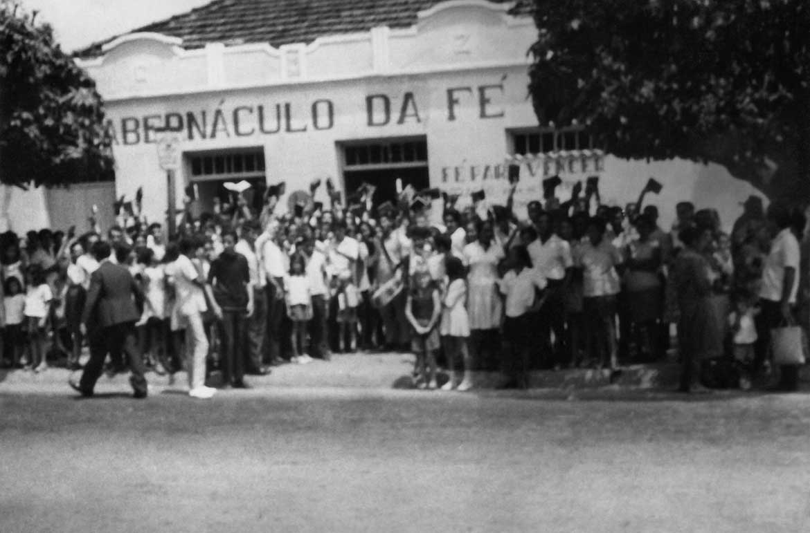

Histórico
A igreja Tabernáculo da Fé em Goiânia - GO, foi fundada em 1968, o que ocorreu de um modo
muito peculiar, pois na realidade, ela não foi fundada, mas nasceu aqui, quando, vindo de Brasília para esta
Capital do Estado de Goiás, o Pr. Joaquim Gonçalves Silva, obedecendo uma chamada de Deus, sem respaldo
algum de nenhuma igreja, começou a pregar sozinho na porta do antigo mercado Municipal, no centro da cidade.
Na época ele tinha 32 anos de idade. Havia ele vendido em Brasília - DF a única casa que possuía, e com o
dinheiro dessa venda, colocou no ar um programa diário na Rádio Jornal de Goiás, às 18:00 h e através dele,
pregava veementemente, convidando o povo para crer na genuína e pura Palavra de Deus, e não no nome de uma
igreja qualquer, por melhor que fosse ela.
Baseado no tema: "Jesus Cristo é o mesmo ontem, hoje e eternamente", realizou ali na porta daquele mercado,
uma grande obra de cura divina e libertação dos oprimidos pelo diabo. O Pr. Joaquim Gonçalves havia chegado
aqui em dezembro de 1967, e esse trabalho na porta do Mercado Municipal acontecia nos primeiros meses de
1968.

Mercado Municipal de Goiânia - GO em 1968.
Pr. Joaquim Gonçalves ao lado do seu jeep modelo 1952
E o único respaldo que era a segurança que trazia em seu coração, de que Deus o havia
enviado. Depois de haver reunido um considerável número de pessoas que após ouvi-lo pelo rádio e ali na rua,
iam se achegando a ele, sentiu necessidade de reunir aquelas pessoas num local onde pudessem se assentar
para ouvirem a Palavra de Deus. Foi quando, descendo em seu Jeep modelo 1952, a Av. Goiás, sentiu de parar
onde seu coração disse: "é aqui".
E ali estava ele e seu companheiro frente a um casarão que outrora havia sido uma máquina de beneficiar
arroz que houvera pegado fogo e onde agora só havia escombros e muita sujeira. Alugou o local, arregaçou ele
mesmo as mangas da camisa, retirou o entulho e no dia 18 de maio de 1968 inaugurou o local que haveria de
abrigar centenas de almas que viriam atraídas por uma voz diferente: uma voz que condenava o pecado, mas que
libertava o pecador, e que não era outra senão a Voz do Evangelho de Nosso Senhor Jesus Cristo. Dentro de
poucos meses o local já não comportava mais a multidão que era atraída pela pregação através do rádio e
pelas notícias das maravilhas que Deus estava operando ali. Agora, aquele grande movimento de cura divina e
libertação foi real e verdadeiro e não tinha nada a ver com comércio de cura divina que vemos hoje. Pois
ninguém que ali chegou e que foi curado, liberto ou abençoado de algum outro modo, recebeu estas bênçãos sem
que antes ouvisse a Palavra de Deus, pregada com amor, unção e severa admoestação. Ali ninguém tinha que dar
nada, mas apenas receber o que Deus estava oferecendo de graça. Sob a unção de Deus, o Pr. Joaquim
Gonçalves, através de suas pregações demonstrava o seu inconformismo com a falsa conversão, por não ver nos
novos crentes uma nova vida.
O comodismos dos velhos crentes o incomodava.O fato de haver a igreja se tornado um sal insípido pisada por
todos os hábitos mundanos que a invadiram o irritavam de tal forma que suas mensagens chegavam no púlpito
com a força de uma retro-escavadeira,arrancando o pecado pelas raízes. Só depois de pregar duro contra o
pecado,( bem entendido, "contra o pecado," não contra o pecador) ele passava a orar com muito amor pelos
enfermos. E verdadeiros milagres aconteciam.
Não estava ele preocupado em "fundar uma nova igreja", pois segundo mostrava em suas pregações, de igrejas o
mundo estava cheio e no entanto o cristianismo a cada dia se tornava mais frouxo e impotente para operar na
vida das pessoas as mudanças que sempre ocorrem quando o Evangelho é pregado no poder e na autoridade do
Espírito Santo. Agora, como havia de se esperar, aquilo causou um verdadeiro distúrbio religioso em
Goiânia-GO. Mesmo porque aquele era um acontecimento inédito no meio religioso da cidade.

Mocidade em frente ao Tabernáculo da Fé, voltando de um culto ao ar livre
Interior do tabernáculo em 1969
Nunca se ouvira aqui de algo assim. Pois o único movimento diferente do morno formalismo
protestante que se via, era o das Assembléias de Deus, que mais se ocupavam com os dons carismáticos,
principalmente com o falar em línguas e profetizar e que pouco exercitavam o dom da cura divina. Mas ali
estava tudo: a Palavra no poder e autoridade do Espírito Santo e os sinais que A seguiam.
Nesta foto estampada pelo jornal se vê uma grande concentração em praça pública à qual o
povo atendeu sem se importar com a chuva que caia sobre a cidade - 1969. E na verdade, muitos daqueles que
naquele dia resistiram a chuva, têm de igual modo permanecido sob as chuvas de lutas, perseguições,
contradições e de toda sorte de dificuldades, sob a expectativa de que o Sol brilhe numa dessas manhãs, com
a Vinda de Nosso Senhor Jesus Cristo.
A fim de que ninguém ficasse sem ser convidado, este folheto convite foi enviado de casa em
casa - 1970.
Um folheto-convite foi enviado de casa em casa. O centro e a periferia foram palmilhados passo a passo e
cada casa, cada barracão, choça ou apartamento recebeu o folheto convite. E o povo atendeu o convite de tal
maneira que o fato passou a incomodar a própria imprensa local que logo estampou em suas primeiras páginas
manchetes como estas: FÉ PARA VENCER ATÉ DEBAIXO D´AGUA ( Jornal Cinco de Março 29.12.69).
Concentração em praça pública em 1969
Pr. Joaquim Gonçalves orando pelos enfermos em 1969
Jornal Cinco de Março de 24.08.1972
E na verdade, muitos daqueles que naquele dia resistiram a chuva, têm de igual modo
permanecido sob as chuvas de lutas, perseguições, contradições e de toda sorte de dificuldades, sob a
expectativa de que o Sol brilhe numa dessas manhãs, com a Vinda de Nosso Senhor Jesus Cristo.
Estávamos muito alegres, a área total daquele terreno havia recebido uma simples cobertura,
e mesmo com o piso de chão batido, já não comportava a multidão que ali presenciava a manifestação do poder
de Deus. Curas, libertações, louvores, lágrimas. É como se o Espírito Santo houvesse ali encontrada
novamente uma mangedoura onde manifestar o Filho. Mas no auge da festa, um tremendo impacto: Fomos todos
surpreendidos com a chegada da mensagem do Profeta de Deus para esta era, precursor da segunda vinda de
Nosso Senhor Jesus Cristo, irmão William Marrion Branham, que veio em cumprimento à profecia de Malaquias
4:5; Mateus 17:11; Apocalipse 10:7.
Profeta William Marrion Branham
Pr. Joaquim Gonçalves ao ser batizado em Nome do Senhor Jesus Cristo em 1971.
Como isto aconteceu?
Havíamos começado aqui em Goiânia em 18 de maio de 1968 e estávamos agora em outubro de
1971. Um pastor auxiliar do pastor Joaquim Gonçalves, ganhou de um outro irmão que passara por Goiânia, uma
coleção incompleta das Sete Eras da Igreja e um livrete O Profeta do Século XX. Não se interessando em
lê-los, deu-os ao Pr. Joaquim Gonçalves, que por sua vez simplesmente os guardou dentro do móvel de uma
velha radiola que tinha em seu escritório. Ali aqueles livros permaneceram por vários meses, sem que ninguém
os lesse. Mas, certa manhã de outubro de 1971, depois de passar uma noite em claro por uma decepção sofrida
numa reunião do Conselho de Ministros à qual havia sido convidado a participar, o pastor Joaquim Gonçalves
foi à Rádio Anhanguera e, ao vivo, pregou uma das mais poderosas mensagens de sua vida, sob o tema: "Sai
dela povo meu", e chegando ao seu escritório disse à pessoa que se encontrava ali: "Deus me mandou ler
aqueles livros que estão guardados aqui." E apanhando-os, se recluiu numa outra sala e ao ler o livrete "O
Profeta do Século Vinte", como não poderia deixar de ocorrer com uma semente eleita, com a alegria de quem
achou algo precioso que buscava, ele exclamou: "Se ninguém quiser me acompanhar, com a mensagem deste
profeta, eu volto sozinho para a porta do Mercado e começo tudo de novo". Mas ele não voltaria e muito menos
sozinho, pois a obra era de Deus, e Deus sabia o que estava fazendo quando reuniu ali aquela gente. E a
semente predestinada de Deus rejubila quando sobre ela, como água, cai a revelação da Palavra de Deus. E foi
exatamente o que aconteceu ali. Num só dia ele e quase duas mil pessoas foram batizados no Tabernáculo da
Fé, desta feita usando o Nome do Pai, do Filho e do Espírito Santo ( Mateus 28:19 )que é Senhor Jesus Cristo
( Atos 2:38 ) conforme nos ensinou o profeta de Deus que veio para restaurar todas estas verdades perdidas
ao longo da caminhada da igreja cristã através dos séculos. Foi então quando todos aqueles que se mostravam
incomodados por aquela "gentinha", passaram a profetizar com um certo ar de quem respira aliviado: "Chegou o
fim!"
Logo aquele Tabernáculo se transformará numa oficina mecânica. "Não levará dois meses e aquele movimento
será disperso." E mais uma vez falharam tais profecias. Pois não estávamos no fim, mas no começo de uma nova
etapa desse ministério que Deus havia levantado aqui em Goiânia - GO. Não há como explicar a pressão feita
pelo inimigo contra essa nova etapa desse ministério. Mas nossa resposta foi sempre mais trabalho. E assim
foram colocados programas radiofônicos de alcance nacional. A Rádio Anhanguera de Goiânia onde estamos
pregando com o programa "Fé Para Vencer" há trinta anos, e Rádio Universo de Curitiba - PR, foram pioneiras
em levar esta mensagem aos quatro cantos do Brasil.
O Pr. Joaquim montou um modesto stúdio onde pregava diariamente e de onde saíam as fitas para as diversas
emissoras de rádio onde eram mantidos programas que levavam a mensagem do profeta de Deus. A nação toda
ouviu aquele grito de chamada, pois a mensagem e o profeta foram apresentados ao povo através de uma
mensagem tão ungida que só havia um modo de combatê-la: partindo para o ataque pessoal, difamações, injúrias
e até ameaças. E estas foram tantas que qualquer ministério recuaria se não fora a graça de Deus para
sustê-lo.
A verdade é que a Mensagem do Profeta causou um distúrbio nacional no meio religioso, o que não impediu que
os eleitos se manifestassem por toda parte. Dezenas de cartas nos chegavam diariamente solicitando-nos mais
esclarecimentos sobre a mensagem. Daí então a necessidade de termos as mensagens em português. Passamos
então a traduzí-las como podíamos, e a imprimí-las de maneira precária, em um mimiografo a tinta em forma de
apostilas. (Isso em 1972) Essas apostilas eram enviadas através do correio e os resultados logo se
manifestavam através de cartas de pessoas que nos escreviam pedindo para receberem o batismo bíblico,
conforme Atos 2:38. E muitos evangelistas foram enviados por todo o país para batizar estas pessoas. Muitas
delas às escondidas, uma vez que eram proibidas até mesmo de ouvirem a mensagem através do rádio. Mas
nenhuma proibição foi capaz de deter essas almas eleitas.
Não tardou muito e novamente os Jornais da cidade publicaram no mesmo dia uma nota oficial do Conselho de
Ministros de Goiânia, na qual desconsideravam o Pr. Joaquim Gonçalves como Pastor Evangélico, visto que o
mesmo, segundo eles, estava pregando uma heresia. (o mesmo que disseram de Paulo - Atos 24:5) Não só os
jornais, mas através de programas de rádio e de quase todos os púlpitos das igrejas evangélicas, o apelo era
o mesmo: "Cuidado! Não vão lá! Não ouçam aquele programa!", o que foi pior, pois tudo isso aguçava a
curiosidade das pessoas que passaram a conferir por si mesmas o que realmente estava acontecendo ali. E foi
então quando muitos "Nicodemos" se manifestaram.
Em meio a todo bombardeio de acusações, difamações, injúrias, e pressão do inimigo, o Pr. Joaquim Gonçalves
nunca dedicou se quer um minuto tentando se defender ou responder o fogo inimigo. Ele sabia o porquê
daquilo.Portanto, a resposta era mais trabalho. E foi o que fez. Melhorou o serviço de impressão das
mensagens do profeta. Agora tínhamos montado uma modesta gráfica e já imprimíamos em forma de livretes. E em
nosso estoque tínhamos mensagens em abundância para atendermos as milhares de cartas que nos chegavam.

Pr.Joaquim Gonçalves em seu primeiro stúdio de gravação, e seu assistente irmão
Joaquim Rodrigues - 1978
Tabernáculo da Fé em Goiânia - GO - 1973
Em 1973 Deus nos deu um modesto Tabernáculo que logo se tornou pequeno para abrigar os
eleitos que se manifestavam dia a dia. Desde então, trinta e dois anos têm se passado, e aqui prosseguimos
pela fé, certos de que Aquele que prometeu, também é fiel para cumprir o que tem prometido, e enquanto Ele
não vem, continuamos trabalhando.
Obreiros continuam sendo enviados aos campos de trabalho. O Pr. Joaquim Gonçalves, pela graça de Deus
continua no púlpito pregando tão forte como sempre o fez, chamando as almas ao arrepedimento e ensinando,
através da mensagem do irmão Branham, a fé para o arrebatamento, enquanto uns duzentos outros pastores
espalhados por toda a nação fazem o mesmo.
Pr. Joaquim Gonçalves pregando em 1969
Pr. Joaquim Gonçalves pregando em 2011